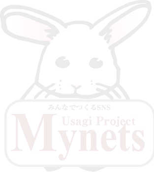

MyNETSへようこそ！
UsagiProjectへようこそ
UsagiProjectのSNSエンジン「MyNETS」を導入するためのツールがUsagiコンバーターです。このツールはOpenPNE2.4.X系や2.6.X系からMyNETS1.1.0へ移行するためのツールです。
新規でMyNETSを導入する場合は、「インストーラー」をご利用ください。
すでにMyNETSをお使いの場合は、「バージョンアップツール」をご利用ください。

Usagiコンバーターの対象について
当 UPGRADE TOOL は、OpenPNE2.4.X、OpenPNE2.6.XからのMyNETSへのコンバートを対象としています。
OpenPNE2.2.X以下のバージョンの場合は、暗号化処理方法が2.4.X以降と違うため、あらかじめ2.4.Xへとバージョンアップしてから当ツールを利用するようにしてください。
処理の流れは次のようになります。
OpenPNEからコンバートする場合は、MyNETSのアプリケーションファイルへすべて切り替えます。
個人的にファイルのカスタマイズ等を行っている場合は、カスタマイズを行ったファイルをインストール後適用するようにしてください。
当ツールは、アプリケーションをそのまま移行するためのツールです。
ファイルの転送
MyNETS1.1.0のファイルをダウンロードし、FTPクライアントまたはSSH等でご利用になるサーバーへアップロードしてください。
※確実にすべてのファイルがアップロードできるようにしてください。（FTP転送の場合、転送ミスで一部ファイルが正常にアップロードできないことがあります。その場合動作上不具合が出る可能性がありますので、ご注意ください。
ファイルが正常にアップロードできたかどうかを確認するためのツールを別途ご用意しています。
スクリプトチェックツールを UsagiProject 公式サイト、またはソースフォージからダウンロードして、サーバーに転送します。
すべてのファイルが正しくアップロードできたか確認してください。
MySQLデータベースの追加処理
MyNETS1.1.0とOpenPNE2.4.X、2.6.X系ではOpenPNEで利用しているMySQLのデータベースをそのまま利用し、MyNETSで追加管理されているテーブルのみを追加することで移行を行うことが可能です。
MyNETS1.1.0では互換性を維持しながら、独自のテーブル拡張を行っています。MyNETSでグレードアップされた新しい機能を利用するためのテーブル等が追加されています。
追加されたテーブルの作成と、新たに追加されたテーブル内の項目を作成します。
MyNETSで追加されたテーブルおよび追加された項目の一覧はこちら
あしあと数、コメント数の調整
MyNETSでは足あとのカウント方法を変更しました。累計のカウント数字を会員テーブルに保持。あしあと一覧を見るときにカウントせず、訪問時に数字をカウントアップする方法をとりました。
MyNETSではコメント数のカウント方法も変更しております。コメントが投稿された時点で、日記そのものに累計のカウント数字をもち、そこに保存されている数値を表示しております。これにより、日記一覧表示の際にコメントテーブルを集計することはなくなりました。
あしあと調整のためのスクリプトと、コメント集計のスクリプトを動かします。
※あしあと保存のテーブルのレコード数、日記のコメントテーブルの数が大きいと、処理に時間がかかります。ご注意ください。
ウィザードを使って作業
さあ、あなたもUsagiコンバーターを使ってOpenPNE2.4.X、2.6.XからMyNETSへブレードアップしましょう！